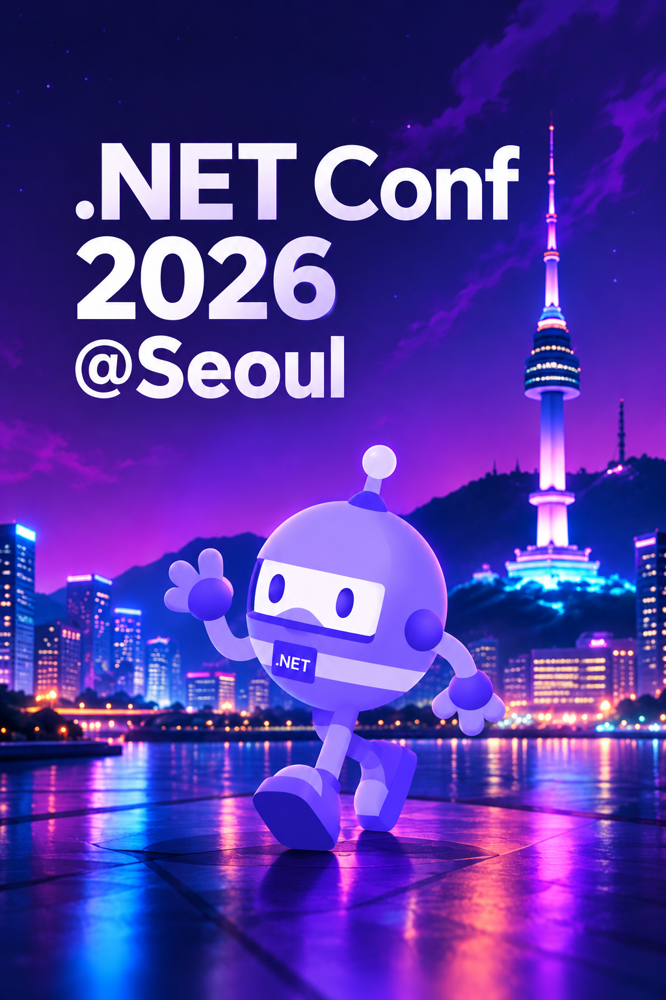
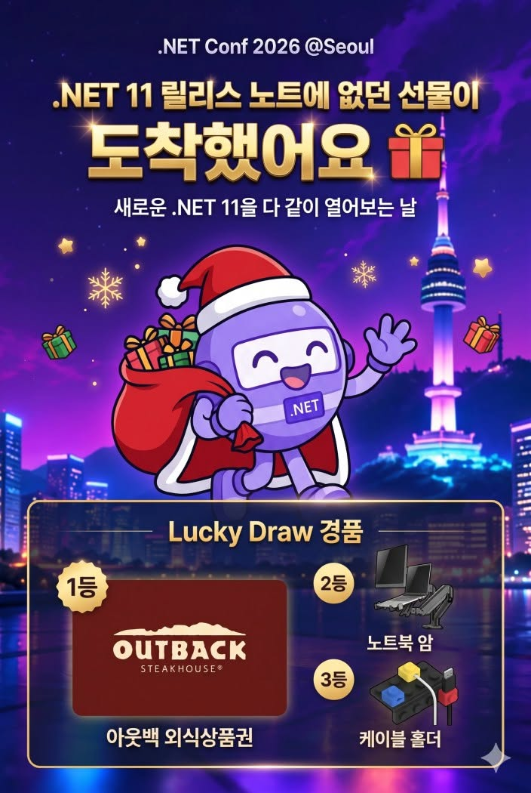

THE .NET COMMUNITY, TOGETHER
우리가 만드는
다음의 .NET
아이디어가 코드가 되고, 경험이 연결되는 하루.
서울에서 .NET 개발자들과 함께하세요.
2026.11.26THU
10:00 — 17:30
10:00 — 17:30
서울 · 더케이트윈타워 A동 13층

HELLO, SEOUL. HELLO, .NET.WHEN11월 26일 목요일
TIME오전 10시 — 오후 5시 30분
WHERE더케이트윈타워 A동 13층
01 / ABOUT THE CONFERENCE
함께 배우고,
더 멀리 만듭니다.
실제 개발 현장에서 얻은 경험과 새로운 가능성을 나눕니다. Windows 앱 배포부터 온디바이스 AI 에이전트까지, .NET으로 만드는 다양한 이야기를 만나보세요.
JOIN THE CONFERENCE
함께 만드는 .NET Conf
발표자로 경험을 나누고, 후원사로 개발자 커뮤니티와 함께해 주세요.
02 / SPEAKERS & SESSIONS
경험을 나누는 사람들
아홉 세션을 소개합니다.
PROGRAM NOTE
행사는 10:00부터 17:30까지 진행됩니다. 참가자에게 점심을 무료로 제공합니다. 전체 타임테이블 보기 ↗
03 / MEET US HERE
04 / WITH OUR SPONSORS
함께해 주시는 후원사
후원사 신청 ↗ 인프라지스틱스
인프라지스틱스 티웃
티웃06 / LUCKY DRAW
함께 즐기는 경품 이벤트
새로운 .NET 11을 다 같이 열어보는 날,
행사의 마지막을 경품 추첨과 함께하세요.
16:50–17:30 · 마무리 및 경품 추첨
- 1등아웃백 외식상품권
- 2등노트북 암
- 3등케이블 홀더
